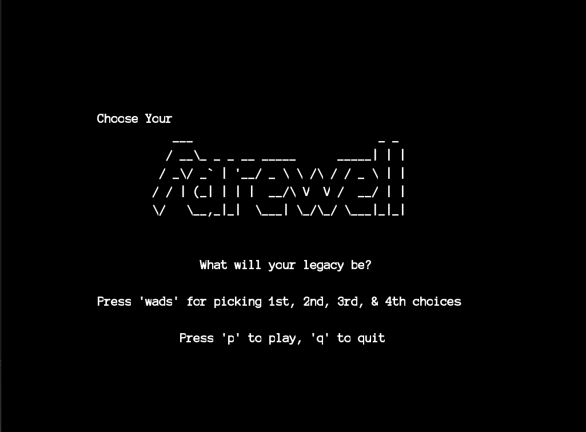

Ben Perry *
Welcome! Enjoy your stay.
If I was limited to do only one thing, I would create.
üìú Manifesto
I'm an aspiring software engineer and video game developer who loves writing narratives and creating fictional worlds and characters, even in my leisure time! I enjoy working on exciting and interesting projects with others, so feel free to connect. I program in C++, C#, C, Python, Java, Ruby, and I've used a lot of frameworks, so I'm confident that I can adapt to the requirements of any project.
My career interests lie typically in the domain of serious games and human-computer interaction, and ultimately I aim to run my own game development company. I have a lot of experience programming systems and creating designs for role-playing games, in particular games structured around turn-based mechanics. I've plenty of experience creating games and media belonging to other genres, and I would encourage anyone to view my work below in the Projects section.
I frequently tackle programming projects outside my core area of interest as well. So far I've created a game engine from scratch in C++, created an application that uses predictive models and the kneighbors algorithm to forecast how busy a location is, designed and actualized a basic fruit picking robot, built a flexible password generator in Python, and much more.
I don't plan to slow down anytime soon, and feel free to contact me and ask what I'm currently working on.
üì° Projects
Turn-Based RPG Template
Perhaps my largest project yet, this template I built to resemble classic RPG gameplay seen in Dragon Quest and Final Fantasy is complete with a full-fledged turn-based battle system, an item system, a shop system, a dialogue system, a quest system, a leveling system to go along with battles, and a small overworld containing a grass area to battle enemies and one overworld boss and a town area that leads into a shop area (the last area) via a house. I programmed all these systems myself. In addition, I designed the UI in all the menus and wrote any dialogue that is present in the template. Unfortunately, the art and audio come courtesy of free asset packs I found on the internet. I plan to expand this game into a full-fledged game when I have the time. The plan is to expand and balance the battle system more by adding status conditions, and the ability to "Zero In" on enemies inflicted with them. I may also add the ability to chat with enemies to end the battle in a less aggressive way. Of course, there is more depth to these plans, however, I will keep such depth to myself until I implement it into the game.
ASKMII Game Engine
The ASKMII Game Engine is a game engine I created from scratch that uses ASKII-style graphics. In addition, I created 3 games (a 2D shooter, a collection game, and a visual novel game) to be played within the engine. The engine was built in Visual Studio using C++ and the Simple and Fast Multimedia Library and includes physics, rendering, dialogue, audio, and other sub-systems/capabilities.
HerdWatch
HerdWatch is an application which uses the kneighbors algorithm, a Flask backend, and a React frontend to allow users to choose a date on the calendar and a location, from which HerdWatch will then tell the user how busy that location will be at that time. Of course, the business is based off of the prediction the machine learning models produce with kneighbors. I had the pleasure of working on this project alongside 4 other WPI students, Darren Ni, Rajesh Ganguli, Joseph Caproni, and Harry Radenburg.
Mood Matcher
Mood Matcher is a software used to generate random quotes based on input. The data is split up via three main categories: happy, sad, and motivational quotes, each with their own subcategories (happy containing love, joyful, and creative; sad containing lonely, anxious, and tired; and motivational containing self-love and life). After pressing on a subcategory, the software will generate a quote befitting of the mood. Each subcategory has roughly thirteen distinct quotes. I also intend to update this project so that it uses artificial intelligence to determine a user's mood based on facial recognition.
Snake Deluxe
This project was aimed as an exercise to incorporate new features into an old game. I worked in a group of three to develop this game; my colleagues being Thea Cloyd and Andreas Keating, who were also Worcester Polytechnic students. I contributed mainly all the code and UI, whereas Thea worked on the snakeskin shop (color swapping) system for the game and Andreas worked on debugging my code so that the gameplay functioned as we were expecting. Upon completion, we added a high-score mechanic, a skin shop mechanic, a main menu, a quest system (based on meeting high-score requirements), a volume slider, original music, and extra 'juice' to the game in the form of particle effects, background images, and a trail for the snake.
Experimental Liftoff
After completing a 3D Obstacle Course in Unity, I wanted to take my understanding of Unity's 3D capabilities to new levels, so I created this game. Experimental Liftoff contains five levels with increasing difficulty and varied gimmicks. The general gameplay of the game involves the player pressing A and D to rotate the rocket left and right respectively while boosting the rocket upwards with the spacebar. Movement is two-dimensional while the background and game objects are all three-dimensional. The goal of each level is to start off from the launch pad and make it over to the landing pad without hitting any obstacles, because if you do, the rocket will explode restarting the level. The game also has custom sound effects and all the art was done in the engine using simple shapes.
And More!
üèÜ Accomplishments
National Society For Leadership & Success
I am a proud exec board member in Worcester Polytechnic Institute's NSLS chapter.
CPR & First Aid Certified
Due to my past experience as a professional life guard, I place I high value on knowing and being able to correctly perform CPR and/or first aid.
I Have Certificates In The Following:
- Sonic Pi Software Operator
- Git & Github in Unity, SourceTree, & Github
Rise above the storm and you will find the sunshine
-Mario Fernandez
üéûÔ∏è Work History
Wonderworks -> Lead Programmer ; June 2024 - Present
Working to create a high quality demo of our 2D JRPG video game to hopefully draw more developers to the project and from there begin realizing the full game and releasing it in parts. I am in charge of programming the entire combat system and providing aid to the other developers wherever needed. The project is heavy in C# scripting as we use Unity as the frontend for our game.
CodeNinjas -> Coding Instructor ; May 2024 - September 2024
I lead a team of counsilors in running STEM focused summer camps for children between the ages of 6 and 14. In addition I added and created a new curriculum to the CodeNinjas camp program roster called the Advanced AI Academy program, in which I taught young minds how to program in Python as well as create their own machine learning models and intelligence agents. Topics from other taught camps include fundamentals of programming, web development using HTML, CSS, and Javascript, 3D printing, modding video games, and video game development.
YMCA Of Central Massachusetts ; April 2020 - June 2023
I was a professional lifeguarded stationed at the indoor pool at the YMCA during open hours and the community pool owned by the YMCA during their open hours. In addition, I maintained the cleanliness of the facility and assisted new hires with the job and front desk work due to my prior experience.
Feel free to connect with me at www.linkedin.com/in/ben-perry-0ba020255 or shoot me an email at famogr.perry@gmail.com.